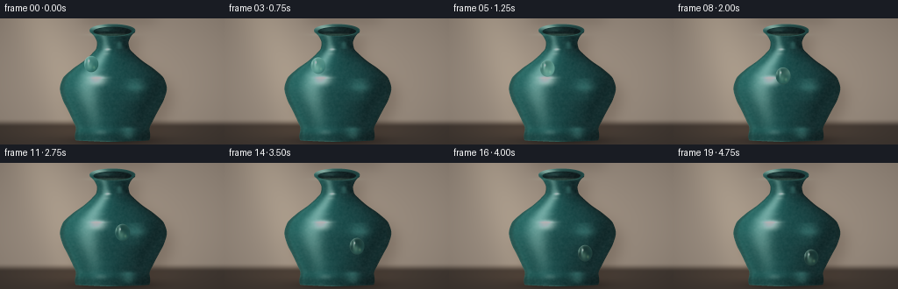
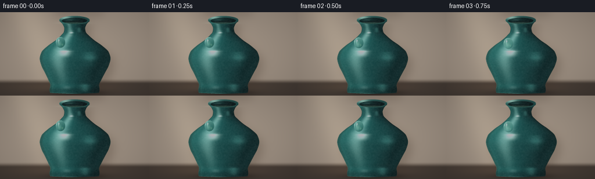
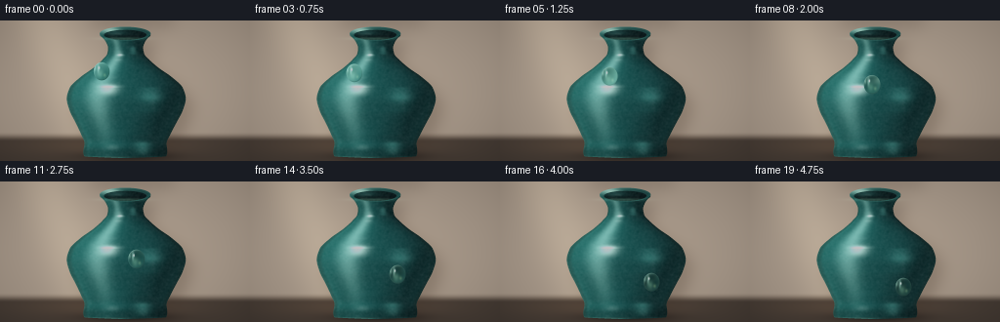
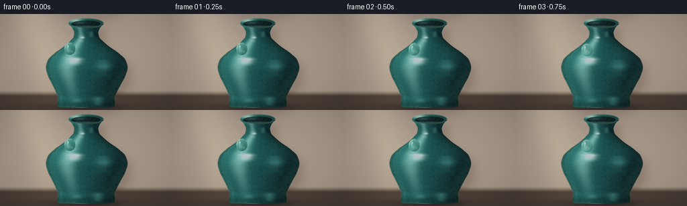

CODING AGENTS AS PIXEL WORLD MODELS
traex/DeepSeek-V4.1-Flash · phygen_039
点击播放 · 原生 RGB 像素
逐轮保存的候选
回放视频、检查图与代码变化。
每份候选均可单独播放。实际图片检查记录在下方工具轨迹中。
候选 01播放与检查图
点击播放 · 原生 RGB 像素


展开代码变化
--- 上一保存版本
+++ 本次保存版本
@@ -0,0 +1,377 @@
+"""Render a close-up of a dewdrop sliding down a glazed ceramic vase."""
+
+from pathlib import Path
+
+import numpy as np
+from PIL import Image, ImageFilter
+from scipy.interpolate import PchipInterpolator
+from scipy.ndimage import gaussian_filter, map_coordinates
+
+import artifact_io
+
+
+WIDTH = 256
+HEIGHT = 144
+FRAMES = 20
+FPS = 4.0
+SUPERSAMPLE = 4
+
+
+def smoothstep(edge0, edge1, value):
+ t = np.clip((value - edge0) / (edge1 - edge0), 0.0, 1.0)
+ return t * t * (3.0 - 2.0 * t)
+
+
+def normalize(vector):
+ return vector / np.linalg.norm(vector)
+
+
+def vase_geometry():
+ knots_y = np.array(
+ [9, 12, 15, 18, 22, 28, 34, 40, 48, 58, 69, 80, 92, 104, 116, 126, 134, 139, 141],
+ dtype=np.float64,
+ )
+ knots_r = np.array(
+ [0, 24, 26, 23, 20, 18, 19, 24, 33, 47, 58, 61, 58, 52, 46, 42, 43, 42, 0],
+ dtype=np.float64,
+ )
+ radius = PchipInterpolator(knots_y, knots_r, extrapolate=False)
+ derivative = radius.derivative()
+ return radius, derivative
+
+
+def make_background(xx, yy, vase_mask):
+ """Warm, softly lit studio wall with a broad window reflection."""
+ top = np.array([0.75, 0.65, 0.55])
+ middle = np.array([0.57, 0.48, 0.40])
+ bottom = np.array([0.30, 0.28, 0.26])
+
+ vertical = np.clip(yy / HEIGHT, 0.0, 1.0)
+ lower = smoothstep(0.25, 1.0, vertical)
+ image = top[None, None, :] * (1.0 - vertical[..., None])
+ image += middle[None, None, :] * vertical[..., None] * (1.0 - lower[..., None])
+ image += bottom[None, None, :] * lower[..., None]
+
+ # A diffused shaft of daylight enters from the upper left.
+ shaft = np.exp(-((xx - 0.18 - 0.20 * yy) / 0.12) ** 2)
+ shaft *= 0.72 + 0.28 * np.exp(-((yy - 0.05) / 0.70) ** 2)
+ image += shaft[..., None] * np.array([0.17, 0.14, 0.10])
+
+ # A very gentle warm pool behind the vase separates it from the wall.
+ halo = np.exp(-(((xx - 0.51) / 0.27) ** 2 + ((yy - 0.55) / 0.39) ** 2))
+ image += halo[..., None] * np.array([0.055, 0.032, 0.012])
+
+ # Table plane and a soft horizon near the foot.
+ table = smoothstep(0.79, 0.86, yy)
+ table_tone = np.array([0.235, 0.195, 0.160])
+ image = image * (1.0 - table[..., None]) + table_tone[None, None, :] * table[..., None]
+ table_sheen = np.exp(-(((xx - 0.43) / 0.34) ** 2 + ((yy - 0.89) / 0.07) ** 2))
+ image += table_sheen[..., None] * np.array([0.07, 0.045, 0.025])
+
+ # Blurred cast shadow, offset to the right and slightly down.
+ shadow = np.roll(vase_mask.astype(np.float32), (10 * SUPERSAMPLE, 8 * SUPERSAMPLE), axis=(0, 1))
+ shadow = gaussian_filter(shadow, sigma=8.0 * SUPERSAMPLE)
+ shadow *= 0.62
+ shadow_color = np.array([0.11, 0.085, 0.065])
+ image = image * (1.0 - shadow[..., None] * 0.55)
+ image += shadow[..., None] * shadow_color
+
+ # Floor contact shadow.
+ contact = np.exp(-(((xx - 0.515) / 0.17) ** 2 + ((yy - 0.965) / 0.032) ** 2))
+ image *= 1.0 - 0.48 * contact[..., None]
+
+ # Optical vignette and a little film-like tonal shaping.
+ vignette = 1.0 - 0.24 * (
+ ((xx - 0.5) / 0.68) ** 2 + ((yy - 0.5) / 0.78) ** 2
+ )
+ image *= np.clip(vignette, 0.68, 1.0)[..., None]
+ return np.clip(image, 0.0, 1.0)
+
+
+def render_vase(xx, yy):
+ """Shade a vase of revolution in a fixed, gently angled studio light."""
+ radius_fn, derivative_fn = vase_geometry()
+ center_x = 128.0 + 1.15 * np.sin((yy - 10.0) * np.pi / 132.0)
+ radius = radius_fn(yy)
+ valid_y = np.isfinite(radius) & (radius > 0.2)
+ radius_safe = np.where(valid_y, radius, 1.0)
+
+ u = (xx - center_x) / radius_safe
+ inside = valid_y & (np.abs(u) <= 1.0)
+ u = np.clip(u, -1.0, 1.0)
+ z = np.sqrt(np.maximum(0.0, 1.0 - u * u))
+ slope = derivative_fn(np.clip(yy, 9.0, 141.0))
+ slope = np.nan_to_num(slope, nan=0.0)
+
+ normal = np.stack([u, -0.55 * slope, np.maximum(z, 0.015)], axis=-1)
+ normal /= np.linalg.norm(normal, axis=-1, keepdims=True)
+
+ light = normalize(np.array([-0.58, -0.62, 0.72]))
+ fill = normalize(np.array([0.58, -0.08, 0.50]))
+ view = np.array([0.0, 0.0, 1.0])
+ half_key = normalize(light + view)
+ half_fill = normalize(fill + view)
+
+ n_dot_l = np.clip(np.sum(normal * light, axis=-1), 0.0, 1.0)
+ n_dot_fill = np.clip(np.sum(normal * fill, axis=-1), 0.0, 1.0)
+ n_dot_h = np.clip(np.sum(normal * half_key, axis=-1), 0.0, 1.0)
+ n_dot_hf = np.clip(np.sum(normal * half_fill, axis=-1), 0.0, 1.0)
+
+ # Deep celadon glaze, with a slightly warmer reflected side.
+ theta = np.arcsin(u)
+ glaze_variation = 0.5 + 0.5 * np.sin(theta * 5.5 + yy * 0.075)
+ deep = np.array([0.055, 0.205, 0.205])
+ mid = np.array([0.095, 0.355, 0.335])
+ light_glaze = np.array([0.23, 0.55, 0.49])
+ angular = 0.5 + 0.5 * (-u)
+ albedo = deep[None, None, :] * (1.0 - angular[..., None])
+ albedo += mid[None, None, :] * angular[..., None]
+ albedo *= (0.92 + 0.08 * glaze_variation)[..., None]
+
+ edge_darken = smoothstep(0.0, 0.12, 1.0 - np.abs(u))
+ ambient = 0.25 + 0.22 * (0.5 + 0.5 * normal[..., 1])
+ diffuse = 0.68 * n_dot_l + 0.20 * n_dot_fill
+ image = albedo * (ambient + diffuse * edge_darken)[..., None]
+ image += albedo * light_glaze[None, None, :] * (0.28 * n_dot_l**2)[..., None]
+
+ # Broad softbox reflection plus a tight glazed-ceramic highlight.
+ broad = np.exp(-((u + 0.48) / 0.19) ** 2) * np.exp(-((yy - 58.0) / 50.0) ** 2)
+ tight = n_dot_h**90
+ fill_glint = n_dot_hf**55
+ reflection = (
+ broad[..., None] * np.array([0.36, 0.50, 0.45])
+ + tight[..., None] * np.array([0.90, 0.98, 0.91])
+ + fill_glint[..., None] * np.array([0.10, 0.20, 0.18])
+ )
+ image += reflection * edge_darken[..., None]
+
+ # Fresnel rim makes the curved silhouette read as a glossy solid.
+ fresnel = (1.0 - normal[..., 2]) ** 2.4
+ rim_side = 0.30 + 0.70 * smoothstep(0.15, 0.95, 0.5 - 0.5 * u)
+ image += fresnel[..., None] * rim_side[..., None] * np.array([0.16, 0.31, 0.27])
+
+ # Darkened shoulders and foot ground the object.
+ shoulder_ao = 1.0 - 0.18 * np.exp(-((yy - 31.0) / 10.0) ** 2)
+ foot_ao = 1.0 - 0.28 * np.exp(-((yy - 135.0) / 6.0) ** 2)
+ image *= (shoulder_ao * foot_ao)[..., None]
+ return np.clip(image, 0.0, 1.0), inside, u, z, normal
+
+
+def overlay_mouth(image):
+ """Draw the ellipse of the opening and its hand-thrown rim."""
+ yy, xx = np.mgrid[0:image.shape[0], 0:image.shape[1]].astype(np.float64)
+ x = xx / SUPERSAMPLE
+ y = yy / SUPERSAMPLE
+ center_x = 128.0 + 1.15 * np.sin((13.0 - 10.0) * np.pi / 132.0)
+
+ ox = (x - center_x) / 26.2
+ oy = (y - 13.4) / 7.1
+ outer_q = ox * ox + oy * oy
+ ix = (x - center_x) / 21.9
+ iy = (y - 14.6) / 5.15
+ inner_q = ix * ix + iy * iy
+
+ outer = smoothstep(1.015, 0.985, outer_q)
+ inner = smoothstep(0.985, 1.015, inner_q)
+ ring = outer * inner
+
+ # Interior is a quiet, near-black pool with a cool inner wall.
+ interior = smoothstep(1.02, 0.95, inner_q)
+ pool_depth = np.clip(1.0 - 0.38 * np.clip((y - 13.6) / 5.0, 0.0, 1.0), 0.0, 1.0)
+ interior_color = np.array([0.018, 0.055, 0.056])[None, None, :]
+ interior_color = interior_color * pool_depth[..., None]
+ inner_wall = np.exp(-((x - center_x + 10.0) / 12.0) ** 2 - ((y - 12.3) / 3.0) ** 2)
+ interior_color += inner_wall[..., None] * np.array([0.05, 0.12, 0.11])
+ image = image * (1.0 - 0.92 * interior[..., None]) + interior_color * interior[..., None]
+
+ # Rim follows the same left-lit ceramic response as the body.
+ radial = np.clip(np.sqrt(np.maximum(outer_q, 0.0)) - 0.84, 0.0, 0.16) / 0.16
+ rim_light = 0.34 + 0.66 * np.clip(-ox * 0.62 - oy * 0.78, 0.0, 1.0)
+ rim_highlight = np.exp(-((ox + 0.55) / 0.32) ** 2 - ((oy + 0.43) / 0.44) ** 2)
+ rim_color = np.array([0.14, 0.42, 0.39])[None, None, :] * (0.45 + 0.55 * rim_light[..., None])
+ rim_color += rim_highlight[..., None] * np.array([0.65, 0.82, 0.70])
+ rim_color *= (0.75 + 0.25 * radial)[..., None]
+ image = image * (1.0 - 0.96 * ring[..., None]) + rim_color * ring[..., None]
+
+ # The front lip catches a narrow, slightly warmer reflected light.
+ front_lip = np.exp(-((x - center_x + 2.0) / 21.0) ** 2 - ((y - 18.5) / 1.45) ** 2)
+ image += front_lip[..., None] * np.array([0.12, 0.20, 0.16])
+ return np.clip(image, 0.0, 1.0)
+
+
+def droplet_center(frame):
+ u = frame / (FRAMES - 1)
+ t = 0.5 - 0.5 * np.cos(np.pi * u)
+
+ # Cubic Bezier follows the shoulder and then glides down the belly.
+ p0 = np.array([104.0, 52.0])
+ p1 = np.array([117.0, 60.0])
+ p2 = np.array([149.0, 79.0])
+ p3 = np.array([157.0, 108.0])
+ center = (
+ (1.0 - t) ** 3 * p0
+ + 3.0 * (1.0 - t) ** 2 * t * p1
+ + 3.0 * (1.0 - t) * t * t * p2
+ + t**3 * p3
+ )
+ center += np.array([0.55 * np.sin(2.0 * np.pi * t), 0.35 * np.sin(3.0 * np.pi * t)])
+ return center, t
+
+
+def add_drop(base, center, t):
+ """Composite a refractive bead and its contact shadow into the scene."""
+ h, w, _ = base.shape
+ yy, xx = np.mgrid[0:h, 0:w].astype(np.float64)
+ x = xx / SUPERSAMPLE
+ y = yy / SUPERSAMPLE
+ cx, cy = center
+
+ rx = 8.25 + 0.30 * np.sin(np.pi * t)
+ ry = 9.35 + 0.45 * np.sin(np.pi * t)
+ dx = (x - cx) / rx
+ dy = (y - cy) / ry
+ rr = np.sqrt(dx * dx + dy * dy)
+ q = dx * dx + dy * dy
+
+ # Soft contact shadow on the ceramic, biased down and right.
+ sx = (x - cx - 2.0) / (rx * 1.45)
+ sy = (y - cy - 3.0) / (ry * 1.35)
+ shadow = np.exp(-2.8 * (sx * sx + sy * sy)) * (1.0 - smoothstep(0.55, 1.15, rr))
+ shadow = gaussian_filter(shadow, sigma=1.4 * SUPERSAMPLE)
+ shadowed = base * (1.0 - 0.38 * shadow[..., None])
+ shadowed += shadow[..., None] * np.array([0.008, 0.030, 0.029])
+
+ # Screen-space lens map: the glaze behind the bead is compressed and inverted.
+ lens = np.clip(1.0 - 0.22 * q, 0.56, 1.0)
+ sample_x = cx - 0.56 * dx * rx * lens
+ sample_y = cy - 0.58 * dy * ry * lens + 0.35 * (1.0 - q)
+ chroma = 1.25
+ coords = np.stack(
+ [
+ sample_y * SUPERSAMPLE - 0.5,
+ sample_x * SUPERSAMPLE - 0.5,
+ ],
+ axis=0,
+ )
+ refr = np.empty_like(base)
+ for channel, shift in enumerate((-chroma, 0.0, chroma)):
+ refr[..., channel] = map_coordinates(
+ shadowed[..., channel],
+ coords + np.array([[[0.0]], [[shift]]]),
+ order=3,
+ mode="nearest",
+ )
+
+ # Water absorption and a faint internal cyan caustic.
+ refr *= np.array([0.88, 0.98, 0.95])[None, None, :]
+ refr += np.array([0.020, 0.036, 0.030])[None, None, :]
+ caustic = np.exp(-((dx + 0.16) / 0.34) ** 2 - ((dy - 0.30) / 0.42) ** 2)
+ refr += caustic[..., None] * np.array([0.16, 0.23, 0.17])
+
+ # Curved surface normal supplies the fresnel rim and reflected light.
+ nz = np.sqrt(np.clip(1.0 - q, 0.0, 1.0))
+ fresnel = (1.0 - nz) ** 2.0
+ rim_light = 0.20 + 0.80 * smoothstep(0.2, 1.0, -0.62 * dx - 0.78 * dy)
+ refr += fresnel[..., None] * rim_light[..., None] * np.array([0.48, 0.65, 0.57])
+
+ # The main window reflection is an elongated, soft-edged crescent.
+ crescent = np.exp(-((dx + 0.43) / 0.13) ** 2 - ((dy + 0.35) / 0.42) ** 2)
+ crescent *= 0.55 + 0.45 * smoothstep(-0.9, 0.6, dy)
+ hot = np.exp(-((dx + 0.31) / 0.075) ** 2 - ((dy + 0.39) / 0.13) ** 2)
+ sparkle = np.exp(-((dx + 0.31) / 0.027) ** 2 - ((dy + 0.39) / 0.055) ** 2)
+ refr += crescent[..., None] * np.array([0.48, 0.66, 0.58])
+ refr += hot[..., None] * np.array([0.78, 0.91, 0.84])
+ refr += sparkle[..., None] * np.array([1.25, 1.30, 1.20])
+
+ # A warm secondary glint and dark lower rim give the bead volume.
+ lower_glint = np.exp(-((dx - 0.38) / 0.16) ** 2 - ((dy - 0.42) / 0.19) ** 2)
+ refr += lower_glint[..., None] * np.array([0.16, 0.20, 0.12])
+ dark_rim = np.exp(-((rr - 0.96) / 0.075) ** 2) * smoothstep(-0.2, 0.9, 0.55 * dx + 0.82 * dy)
+ refr *= 1.0 - 0.24 * dark_rim[..., None]
+
+ alpha = 1.0 - smoothstep(0.975, 1.015, rr)
+ # A tiny lift on the trailing edge catches the studio light.
+ trailing = np.exp(-((dx + 0.80) / 0.10) ** 2 - ((dy + 0.30) / 0.24) ** 2)
+ refr += trailing[..., None] * np.array([0.22, 0.31, 0.26])
+
+ result = shadowed * (1.0 - alpha[..., None]) + refr * alpha[..., None]
+
+ # A faint focused caustic lands just below the moving drop.
+ caustic_x = (x - cx - 3.8) / 3.2
+ caustic_y = (y - cy - 8.0) / 1.5
+ surface_caustic = np.exp(-(caustic_x**2 + caustic_y**2))
+ surface_caustic *= 1.0 - smoothstep(0.0, 1.0, rr)
+ result += surface_caustic[..., None] * np.array([0.045, 0.080, 0.063])
+ return np.clip(result, 0.0, 1.0)
+
+
+def make_base_scene():
+ h = HEIGHT * SUPERSAMPLE
+ w = WIDTH * SUPERSAMPLE
+ yy, xx = np.mgrid[0:h, 0:w].astype(np.float64)
+ x = xx / SUPERSAMPLE
+ y = yy / SUPERSAMPLE
+
+ radius_fn, _ = vase_geometry()
+ center_x = 128.0 + 1.15 * np.sin((y - 10.0) * np.pi / 132.0)
+ radius = radius_fn(y)
+ vase_mask = np.isfinite(radius) & (radius > 0.2) & (np.abs(x - center_x) <= radius)
+
+ background = make_background(x / WIDTH, y / HEIGHT, vase_mask)
+ vase, inside, _, _, _ = render_vase(x, y)
+ scene = background * (1.0 - inside[..., None]) + vase * inside[..., None]
+ scene = overlay_mouth(scene)
+
+ # A restrained glaze grain keeps the large smooth areas from looking synthetic.
+ rng = np.random.default_rng(39)
+ grain = rng.normal(0.0, 1.0, size=(h, w)).astype(np.float32)
+ grain = gaussian_filter(grain, sigma=0.65 * SUPERSAMPLE)
+ grain = grain / (np.std(grain) + 1e-6)
+ scene += grain[..., None] * inside[..., None] * 0.008
+ return np.clip(scene, 0.0, 1.0)
+
+
+def finish_frame(image):
+ """Downsample, add restrained film response, and quantize to RGB."""
+ image = image.reshape(HEIGHT, SUPERSAMPLE, WIDTH, SUPERSAMPLE, 3).mean(axis=(1, 3))
+ image = np.clip(image, 0.0, 1.0)
+
+ # Gentle highlight roll-off and a cool lift in the darkest values.
+ image = 1.0 - np.exp(-image * 1.18)
+ image = image * 0.96 + 0.035
+ image[..., 2] += 0.006
+
+ # Subtle final sharpening preserves the bead's crisp silhouette.
+ blurred = np.stack(
+ [
+ np.asarray(
+ Image.fromarray((np.clip(image[..., c], 0.0, 1.0) * 255).astype(np.uint8)).filter(
+ ImageFilter.GaussianBlur(0.45)
+ )
+ ).astype(np.float32)
+ / 255.0
+ for c in range(3)
+ ],
+ axis=-1,
+ )
+ image = np.clip(image + 0.20 * (image - blurred), 0.0, 1.0)
+ return np.round(image * 255.0).astype(np.uint8)
+
+
+def main():
+ case_dir = Path(__file__).resolve().parent
+ base = make_base_scene()
+ frames = []
+ for index in range(FRAMES):
+ center, t = droplet_center(index)
+ rendered = add_drop(base, center, t)
+ frames.append(finish_frame(rendered))
+ print(f"rendered frame {index + 1:02d}/{FRAMES} drop=({center[0]:.1f}, {center[1]:.1f})")
+
+ frames = np.stack(frames)
+ artifact_io.save(frames, case_dir)
+ print(f"saved {FRAMES} RGB frames to {case_dir}")
+
+
+if __name__ == "__main__":
+ main()
候选 02播放与检查图
点击播放 · 原生 RGB 像素


展开代码变化
--- 上一保存版本
+++ 本次保存版本
@@ -281,7 +281,7 @@
sparkle = np.exp(-((dx + 0.31) / 0.027) ** 2 - ((dy + 0.39) / 0.055) ** 2)
refr += crescent[..., None] * np.array([0.48, 0.66, 0.58])
refr += hot[..., None] * np.array([0.78, 0.91, 0.84])
- refr += sparkle[..., None] * np.array([1.25, 1.30, 1.20])
+ refr += sparkle[..., None] * np.array([2.80, 3.00, 2.70])
# A warm secondary glint and dark lower rim give the bead volume.
lower_glint = np.exp(-((dx - 0.38) / 0.16) ** 2 - ((dy - 0.42) / 0.19) ** 2)
@@ -337,8 +337,8 @@
image = np.clip(image, 0.0, 1.0)
# Gentle highlight roll-off and a cool lift in the darkest values.
- image = 1.0 - np.exp(-image * 1.18)
- image = image * 0.96 + 0.035
+ image = 1.0 - np.exp(-image * 1.20)
+ image = image * 1.06 + 0.020
image[..., 2] += 0.006
# Subtle final sharpening preserves the bead's crisp silhouette.
可观测工具轨迹
实际执行的命令与返回图片。
命令 1exit 0
/bin/bash -c "pwd && rg --files -g 'prompt.txt' -g 'GENERATION_RULES.md' -g 'task_spec.json' -g '"'!**/.git/**'"'"
命令 2exit 0
/bin/bash -c 'ls -la'
命令 3exit 0
/bin/bash -c 'cat prompt.txt'
命令 4exit 0
/bin/bash -c 'cat GENERATION_RULES.md'
命令 5exit 0
/bin/bash -c 'cat task_spec.json'
命令 6exit 0
/bin/bash -c "sed -n '1,240p' artifact_io.py && sed -n '1,240p' player_template.html"
命令 7exit 0
/bin/bash -c "python - <<'PY' import importlib.util for m in ['numpy','PIL','scipy','cv2','imageio','matplotlib']: print(m, bool(importlib.util.find_spec(m))) PY"
命令 8exit 0
/bin/bash -c 'python -V && ffmpeg -version | head -n 2'
命令 9exit 0
/bin/bash -c "python - <<'PY'
from PIL import Image
print('Pillow', Image.__version__)
PY"命令 10exit 0
/bin/bash -c 'command -v chafa || true; command -v viu || true; command -v img2txt || true; command -v convert || true'
命令 11exit 0
/bin/bash -c "python - <<'PY' import importlib.util for m in ['skimage','torch','moderngl','pyrender','trimesh']: print(m, bool(importlib.util.find_spec(m))) PY"
命令 12exit 0
/bin/bash -c 'python generate.py'
命令 13exit 0
/bin/bash -c "python - <<'PY'
from PIL import Image
import numpy as np
for i in [0,7,14,19]:
im=np.array(Image.open(f'frames/{i:02d}.png').convert('RGB')).astype(float)/255
print(i, 'mean', im.mean((0,1)).round(3), 'std', im.std((0,1)).round(3), 'minmax', im.min().round(2), im.max().round(2))
PY"命令 14exit 0
/bin/bash -c "python - <<'PY'
from PIL import Image, ImageOps
import numpy as np
chars=' .:-=+*#%@'
for fi in [0,10,19]:
im=Image.open(f'frames/{fi:02d}.png').convert('L').resize((96,40))
a=np.array(im).astype(float)/255
print('\\nFRAME',fi)
for row in a:
print(''.join(chars[min(len(chars)-1,int(v*(len(chars)-1)))] for v in row))
PY"命令 15exit 0
/bin/bash -c "python - <<'PY'
from PIL import Image
import numpy as np
chars=' .,:;irsXA253hMHGS#9B&@'
for fi in [0,4,8,12,16,19]:
a=np.array(Image.open(f'frames/{fi:02d}.png').convert('L'))
# drop rough center from path
x,y=[(104,52),(109,55),(125,66),(144,85),(155,103),(157,108)][[0,4,8,12,16,19].index(fi)]
crop=a[max(0,y-15):y+16,max(0,x-14):x+15]
crop=np.array(Image.fromarray(crop).resize((58,31)))
print('\\nF',fi,'at',x,y)
for row in crop:
print(''.join(chars[min(len(chars)-1,int(v/256*len(chars)))] for v in row))
PY"命令 16exit 0
/bin/bash -c "python - <<'PY'
from PIL import Image
im=Image.open('inspection.png')
print(im.size)
# Print dominant color samples around vase and background
import numpy as np
for y,x in [(72,128),(90,110),(90,160),(20,128),(100,60),(100,210),(50,128),(135,128)]:
print((x,y), np.array(Image.open('frames/00.png'))[y,x])
PY"命令 17exit 0
/bin/bash -c "python - <<'PY'
from PIL import Image
import numpy as np
chars=' .:-=+*#%@'
for fi in [0,10,19]:
a=np.array(Image.open(f'frames/{fi:02d}.png').convert('RGB')).astype(float)
# color diff against median static? local contrast
lum=a.mean(2)
print('\\nFRAME',fi,'drop local max', lum[35:120,90:175].max(), 'at', np.unravel_index(lum[35:120,90:175].argmax(),(85,85)))
PY"命令 18exit 0
/bin/bash -c "python - <<'PY'
from PIL import Image
import numpy as np
ims=np.stack([np.array(Image.open(f'frames/{i:02d}.png').convert('RGB')).astype(float) for i in range(20)])
med=np.median(ims,axis=0)
for i in [0,4,8,12,16,19]:
d=np.abs(ims[i]-med).mean(2)
y,x=np.unravel_index(d.argmax(),d.shape)
print(i,'diff mean/max',round(d.mean(),2),round(d.max(),2),'peak',x,y)
PY"命令 19exit 0
/bin/bash -c 'python generate.py'
命令 20exit 0
/bin/bash -c 'ls -lh generate.py pixels.npz index.html inspection.png transition_check.png frames/*.png | tail -n 12'
命令 21exit 0
/bin/bash -c "python -m py_compile generate.py && python - <<'PY'
import json
from pathlib import Path
import numpy as np
from PIL import Image
root=Path('.')
spec=json.loads(Path('task_spec.json').read_text())
p=np.load('pixels.npz')['pixels']
print('pixels',p.shape,p.dtype,'range',int(p.min()),int(p.max()))
files=sorted(Path('frames').glob('*.png'))
print('pngs',len(files),'first_last',files[0].name,files[-1].name)
im=np.array(Image.open(files[0])); print('png shape/dtype',im.shape,im.dtype)
print('index bytes',Path('index.html').stat().st_size,'ready', 'window.__pixelReady=true' in Path('index.html').read_text())
ims=np.stack([np.array(Image.open(f).convert('RGB')) for f in files])
print('all unique frames',len({im.tobytes() for im in ims}),'frame diff min/max',round(np.abs(np.diff(ims.astype(float),axis=0)).mean(),3),round(np.abs(np.diff(ims.astype(float),axis=0)).max(),3))
PY"命令 22exit 0
/bin/bash -c "python - <<'PY'
import base64,json,re
from pathlib import Path
import numpy as np
html=Path('index.html').read_text()
m=re.search(r'const DATA=(\\{.*?\\}),W=DATA.width',html)
assert m
D=json.loads(m.group(1))
def dec(s):
b=np.frombuffer(base64.b64decode(s),dtype='<u4'); return b.copy()
frames=[dec(D['first'])]
for s in D['deltas']:
f=frames[-1].copy(); p=dec(s); i=0
while i<len(p):
off,count=int(p[i]),int(p[i+1]); i+=2
f[off:off+count]=p[i:i+count]; i+=count
frames.append(f)
arr=np.stack(frames).reshape(D['frames'],D['height'],D['width']).transpose(1,2,0)
expected=np.load('pixels.npz')['pixels']
print('player decode matches pixels.npz:',np.array_equal(arr,expected))
print('dimensions:',D['width'],D['height'],D['frames'],D['fps'],'audio:',D['audio'])
PY"保存候选 2 份；完成命令 22 次；可验证图片返回 0 张。原始 API 响应与完整日志保留在本地。